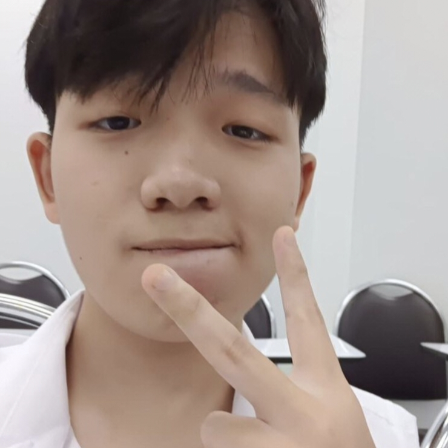
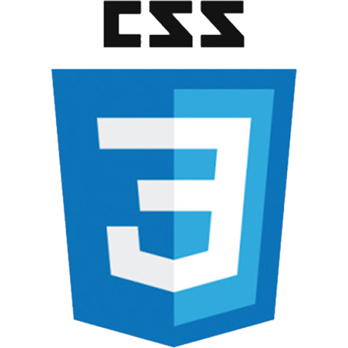
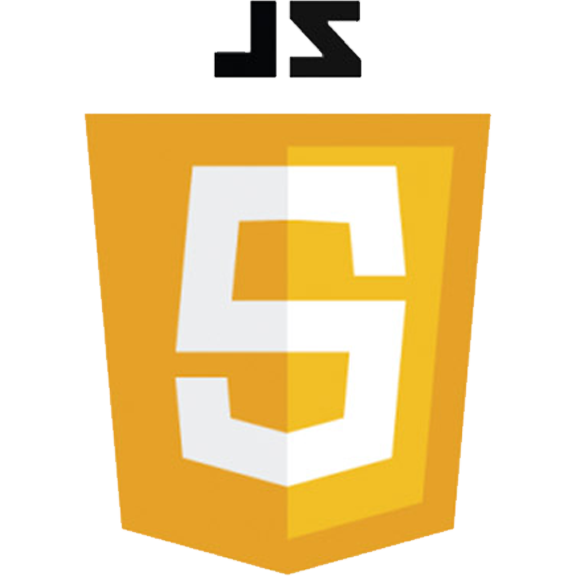
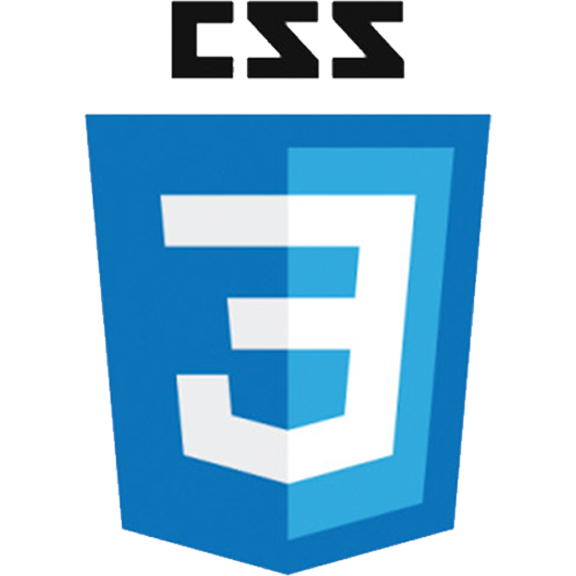
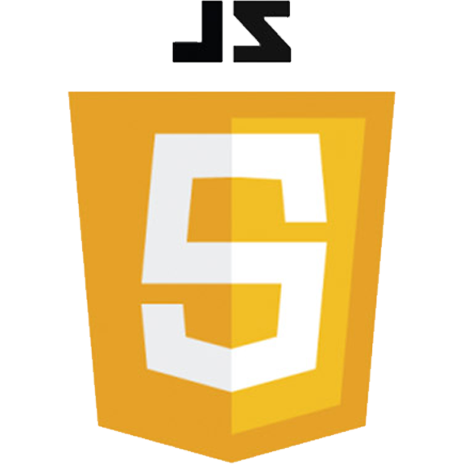

โปรไฟล์

ชื่อ : ตรีธวัฒน์ โกปาราเมศไตรสิน
ชื่อเล่น : นีโม่
เกิดวันที่ : 12 สิงหาคม 2547
ศาสนา : พุทธ
สถานศึกษา : มหาวิทยาลัยเทคโนโลยีพระจอมเกล้าธนบุรี
นิสัย : เฮฮา ตั้งใจเต็มที่กับทุกๆเรื่อง
ทักษะ
 


